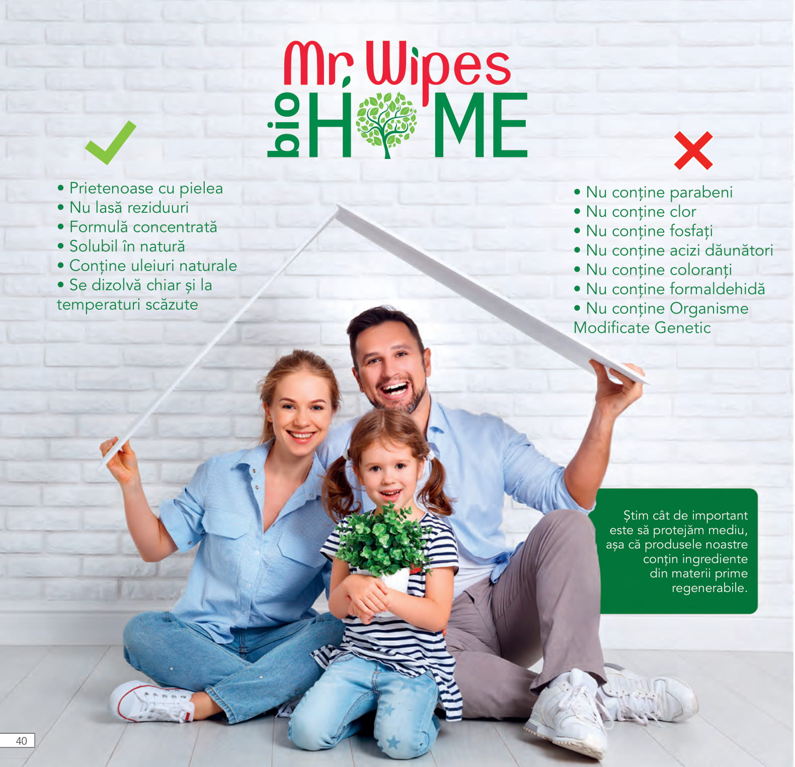

Kitul de start contine
!Unele produse pot fi inlocuite cu altele similare de aceeasi valoare in functie de disponibilitatea stocului
Setul de usturoi contine
Beneficiile utilizarii
Mod de utilizare
Inainte de a-ti spala parul aplica uleiul concentrat de usturoi pe toata lungimea parului incepand cu varfurile
Maseaza prin miscari circulare timp de aproximativ 1 minut si asteapta 30 de minute dupa care spala cu Samponul de usturoi
Dupa samponare aplica Masca de par cu usturoi pe varfurile umede , lasa 2-3 minute sa actioneze apoi clateste
Se recomanda o aplicare de 2 ori pe saptamana cu uleiul concentrat de usturoi
Setul Keratina contine
Beneficiile utilizarii
Mod de utilizare
1. Masează pe păr Samponul cu keratina până obții o spumă bogată. Se clătește cu apă din abundență. Pentru un efect de netezire de durată, aplică Masca de tratament cu keratină pentru păr.
2. Masează Masca de tratament cu keratină pe părul umed după șamponare. Întinde cu ajutorul degetelor pe lungimea părului, insistând pe vârfuri. Pentru rezultate optime, lasă produsul să acționeze 3-5 minute și clătește cu apă din abundență. Aplica apoi Spray-ul de reparare cu keratină ce asigură pieptănarea ușoară și intensifică luciul.
3. Agită bine Spray-ul de reparare cu keratină înainte de utilizare. Pulverizează pe părul umed și masează delicat cu degetele. Nu necesită clătire. Pentru un aspect mătăsos și lucios și pentru tratamentul vârfurilor despicate, aplică Serul de tratament cu keratină pentru păr.
4. Aplică câteva picături cu Serul de keratina pe părul uscat, insistând pe vârfuri. Nu necesită clătire.
Setul Bio Home contine
Avantajele si beneficiile utilizarii produselor Mr Wipes Bio Home
